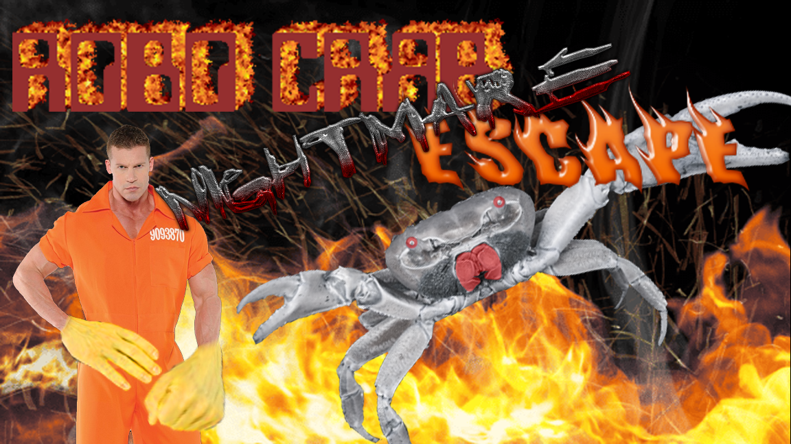
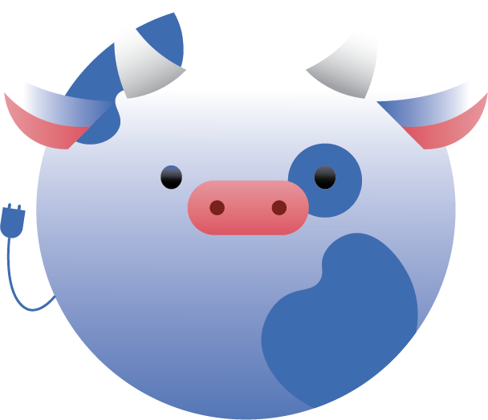

If I am to have a beginning, I must cease to think; for thinking is the very thing that prevents a beginning. - Søren Kierkegaard
My very first project(!) made with two friends over 4 days. Made in GDScript.
The title image looks satirical and it is but I promise you the gameplay's good!

Hopefully soon PLEASPLEASPLAEASE

Everything bar the clock on the top right of this site is made using HTML/CSS, with that clock specifically being made in JavaScript.
If it isn't obvious by these projects, I think that a personal interest is extremely important in a creative industry like ours - something a lot of developers forget we're in. I chose to make that clock to remind me how long I've been nicotine-free for, one of my proudest personal achievements.